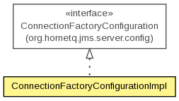

org.hornetq.jms.server.config.impl
Class ConnectionFactoryConfigurationImpl
java.lang.Object
 org.hornetq.jms.server.config.impl.ConnectionFactoryConfigurationImpl
org.hornetq.jms.server.config.impl.ConnectionFactoryConfigurationImpl
- All Implemented Interfaces:
- org.hornetq.core.journal.EncodingSupport, ConnectionFactoryConfiguration
public class ConnectionFactoryConfigurationImpl
- extends Object
- implements ConnectionFactoryConfiguration

This class contains the configuration properties of a connection factory.
It is also persisted on the journal at the time of management is used to created a connection factory and set to store.
Every property on this class has to be also set through encoders through EncodingSupport implementation at this class.
- Author:
- Jeff Mesnil
| Methods inherited from class java.lang.Object |
clone, equals, finalize, getClass, hashCode, notify, notifyAll, toString, wait, wait, wait |
ConnectionFactoryConfigurationImpl
public ConnectionFactoryConfigurationImpl()
- To be used on persistence only
ConnectionFactoryConfigurationImpl
public ConnectionFactoryConfigurationImpl(String name,
boolean ha,
List<String> connectorNames,
String... bindings)
ConnectionFactoryConfigurationImpl
public ConnectionFactoryConfigurationImpl(String name,
boolean ha,
String... bindings)
getBindings
public String[] getBindings()
- Specified by:
getBindings in interface ConnectionFactoryConfiguration
setBindings
public void setBindings(String[] bindings)
- Specified by:
setBindings in interface ConnectionFactoryConfiguration
getName
public String getName()
- Specified by:
getName in interface ConnectionFactoryConfiguration
isPersisted
public boolean isPersisted()
- Specified by:
isPersisted in interface ConnectionFactoryConfiguration
getDiscoveryGroupName
public String getDiscoveryGroupName()
- Specified by:
getDiscoveryGroupName in interface ConnectionFactoryConfiguration
- Returns:
- the discoveryGroupName
setDiscoveryGroupName
public void setDiscoveryGroupName(String discoveryGroupName)
- Specified by:
setDiscoveryGroupName in interface ConnectionFactoryConfiguration
- Parameters:
discoveryGroupName - the discoveryGroupName to set
getConnectorNames
public List<String> getConnectorNames()
- Specified by:
getConnectorNames in interface ConnectionFactoryConfiguration
setConnectorNames
public void setConnectorNames(List<String> connectorNames)
- Specified by:
setConnectorNames in interface ConnectionFactoryConfiguration
isHA
public boolean isHA()
- Specified by:
isHA in interface ConnectionFactoryConfiguration
setHA
public void setHA(boolean ha)
- Specified by:
setHA in interface ConnectionFactoryConfiguration
getClientID
public String getClientID()
- Specified by:
getClientID in interface ConnectionFactoryConfiguration
setClientID
public void setClientID(String clientID)
- Specified by:
setClientID in interface ConnectionFactoryConfiguration
getClientFailureCheckPeriod
public long getClientFailureCheckPeriod()
- Specified by:
getClientFailureCheckPeriod in interface ConnectionFactoryConfiguration
setClientFailureCheckPeriod
public void setClientFailureCheckPeriod(long clientFailureCheckPeriod)
- Specified by:
setClientFailureCheckPeriod in interface ConnectionFactoryConfiguration
getConnectionTTL
public long getConnectionTTL()
- Specified by:
getConnectionTTL in interface ConnectionFactoryConfiguration
setConnectionTTL
public void setConnectionTTL(long connectionTTL)
- Specified by:
setConnectionTTL in interface ConnectionFactoryConfiguration
getCallTimeout
public long getCallTimeout()
- Specified by:
getCallTimeout in interface ConnectionFactoryConfiguration
setCallTimeout
public void setCallTimeout(long callTimeout)
- Specified by:
setCallTimeout in interface ConnectionFactoryConfiguration
getCallFailoverTimeout
public long getCallFailoverTimeout()
- Specified by:
getCallFailoverTimeout in interface ConnectionFactoryConfiguration
setCallFailoverTimeout
public void setCallFailoverTimeout(long callFailoverTimeout)
- Specified by:
setCallFailoverTimeout in interface ConnectionFactoryConfiguration
isCacheLargeMessagesClient
public boolean isCacheLargeMessagesClient()
- Specified by:
isCacheLargeMessagesClient in interface ConnectionFactoryConfiguration
setCacheLargeMessagesClient
public void setCacheLargeMessagesClient(boolean cacheLargeMessagesClient)
- Specified by:
setCacheLargeMessagesClient in interface ConnectionFactoryConfiguration
getMinLargeMessageSize
public int getMinLargeMessageSize()
- Specified by:
getMinLargeMessageSize in interface ConnectionFactoryConfiguration
setMinLargeMessageSize
public void setMinLargeMessageSize(int minLargeMessageSize)
- Specified by:
setMinLargeMessageSize in interface ConnectionFactoryConfiguration
getConsumerWindowSize
public int getConsumerWindowSize()
- Specified by:
getConsumerWindowSize in interface ConnectionFactoryConfiguration
setConsumerWindowSize
public void setConsumerWindowSize(int consumerWindowSize)
- Specified by:
setConsumerWindowSize in interface ConnectionFactoryConfiguration
getConsumerMaxRate
public int getConsumerMaxRate()
- Specified by:
getConsumerMaxRate in interface ConnectionFactoryConfiguration
setConsumerMaxRate
public void setConsumerMaxRate(int consumerMaxRate)
- Specified by:
setConsumerMaxRate in interface ConnectionFactoryConfiguration
getConfirmationWindowSize
public int getConfirmationWindowSize()
- Specified by:
getConfirmationWindowSize in interface ConnectionFactoryConfiguration
setConfirmationWindowSize
public void setConfirmationWindowSize(int confirmationWindowSize)
- Specified by:
setConfirmationWindowSize in interface ConnectionFactoryConfiguration
getProducerMaxRate
public int getProducerMaxRate()
- Specified by:
getProducerMaxRate in interface ConnectionFactoryConfiguration
setProducerMaxRate
public void setProducerMaxRate(int producerMaxRate)
- Specified by:
setProducerMaxRate in interface ConnectionFactoryConfiguration
getProducerWindowSize
public int getProducerWindowSize()
- Specified by:
getProducerWindowSize in interface ConnectionFactoryConfiguration
setProducerWindowSize
public void setProducerWindowSize(int producerWindowSize)
- Specified by:
setProducerWindowSize in interface ConnectionFactoryConfiguration
isBlockOnAcknowledge
public boolean isBlockOnAcknowledge()
- Specified by:
isBlockOnAcknowledge in interface ConnectionFactoryConfiguration
setBlockOnAcknowledge
public void setBlockOnAcknowledge(boolean blockOnAcknowledge)
- Specified by:
setBlockOnAcknowledge in interface ConnectionFactoryConfiguration
isBlockOnDurableSend
public boolean isBlockOnDurableSend()
- Specified by:
isBlockOnDurableSend in interface ConnectionFactoryConfiguration
setBlockOnDurableSend
public void setBlockOnDurableSend(boolean blockOnDurableSend)
- Specified by:
setBlockOnDurableSend in interface ConnectionFactoryConfiguration
isBlockOnNonDurableSend
public boolean isBlockOnNonDurableSend()
- Specified by:
isBlockOnNonDurableSend in interface ConnectionFactoryConfiguration
setBlockOnNonDurableSend
public void setBlockOnNonDurableSend(boolean blockOnNonDurableSend)
- Specified by:
setBlockOnNonDurableSend in interface ConnectionFactoryConfiguration
isAutoGroup
public boolean isAutoGroup()
- Specified by:
isAutoGroup in interface ConnectionFactoryConfiguration
setAutoGroup
public void setAutoGroup(boolean autoGroup)
- Specified by:
setAutoGroup in interface ConnectionFactoryConfiguration
isPreAcknowledge
public boolean isPreAcknowledge()
- Specified by:
isPreAcknowledge in interface ConnectionFactoryConfiguration
setPreAcknowledge
public void setPreAcknowledge(boolean preAcknowledge)
- Specified by:
setPreAcknowledge in interface ConnectionFactoryConfiguration
getLoadBalancingPolicyClassName
public String getLoadBalancingPolicyClassName()
- Specified by:
getLoadBalancingPolicyClassName in interface ConnectionFactoryConfiguration
setLoadBalancingPolicyClassName
public void setLoadBalancingPolicyClassName(String loadBalancingPolicyClassName)
- Specified by:
setLoadBalancingPolicyClassName in interface ConnectionFactoryConfiguration
getTransactionBatchSize
public int getTransactionBatchSize()
- Specified by:
getTransactionBatchSize in interface ConnectionFactoryConfiguration
setTransactionBatchSize
public void setTransactionBatchSize(int transactionBatchSize)
- Specified by:
setTransactionBatchSize in interface ConnectionFactoryConfiguration
getDupsOKBatchSize
public int getDupsOKBatchSize()
- Specified by:
getDupsOKBatchSize in interface ConnectionFactoryConfiguration
setDupsOKBatchSize
public void setDupsOKBatchSize(int dupsOKBatchSize)
- Specified by:
setDupsOKBatchSize in interface ConnectionFactoryConfiguration
getInitialWaitTimeout
public long getInitialWaitTimeout()
setInitialWaitTimeout
public void setInitialWaitTimeout(long initialWaitTimeout)
isUseGlobalPools
public boolean isUseGlobalPools()
- Specified by:
isUseGlobalPools in interface ConnectionFactoryConfiguration
setUseGlobalPools
public void setUseGlobalPools(boolean useGlobalPools)
- Specified by:
setUseGlobalPools in interface ConnectionFactoryConfiguration
getScheduledThreadPoolMaxSize
public int getScheduledThreadPoolMaxSize()
- Specified by:
getScheduledThreadPoolMaxSize in interface ConnectionFactoryConfiguration
setScheduledThreadPoolMaxSize
public void setScheduledThreadPoolMaxSize(int scheduledThreadPoolMaxSize)
- Specified by:
setScheduledThreadPoolMaxSize in interface ConnectionFactoryConfiguration
getThreadPoolMaxSize
public int getThreadPoolMaxSize()
- Specified by:
getThreadPoolMaxSize in interface ConnectionFactoryConfiguration
setThreadPoolMaxSize
public void setThreadPoolMaxSize(int threadPoolMaxSize)
- Specified by:
setThreadPoolMaxSize in interface ConnectionFactoryConfiguration
getRetryInterval
public long getRetryInterval()
- Specified by:
getRetryInterval in interface ConnectionFactoryConfiguration
setRetryInterval
public void setRetryInterval(long retryInterval)
- Specified by:
setRetryInterval in interface ConnectionFactoryConfiguration
getRetryIntervalMultiplier
public double getRetryIntervalMultiplier()
- Specified by:
getRetryIntervalMultiplier in interface ConnectionFactoryConfiguration
setRetryIntervalMultiplier
public void setRetryIntervalMultiplier(double retryIntervalMultiplier)
- Specified by:
setRetryIntervalMultiplier in interface ConnectionFactoryConfiguration
getMaxRetryInterval
public long getMaxRetryInterval()
- Specified by:
getMaxRetryInterval in interface ConnectionFactoryConfiguration
setMaxRetryInterval
public void setMaxRetryInterval(long maxRetryInterval)
- Specified by:
setMaxRetryInterval in interface ConnectionFactoryConfiguration
getReconnectAttempts
public int getReconnectAttempts()
- Specified by:
getReconnectAttempts in interface ConnectionFactoryConfiguration
setReconnectAttempts
public void setReconnectAttempts(int reconnectAttempts)
- Specified by:
setReconnectAttempts in interface ConnectionFactoryConfiguration
isFailoverOnInitialConnection
public boolean isFailoverOnInitialConnection()
- Specified by:
isFailoverOnInitialConnection in interface ConnectionFactoryConfiguration
setFailoverOnInitialConnection
public void setFailoverOnInitialConnection(boolean failover)
- Specified by:
setFailoverOnInitialConnection in interface ConnectionFactoryConfiguration
getGroupID
public String getGroupID()
- Specified by:
getGroupID in interface ConnectionFactoryConfiguration
setGroupID
public void setGroupID(String groupID)
- Specified by:
setGroupID in interface ConnectionFactoryConfiguration
decode
public void decode(HornetQBuffer buffer)
- Specified by:
decode in interface org.hornetq.core.journal.EncodingSupport
encode
public void encode(HornetQBuffer buffer)
- Specified by:
encode in interface org.hornetq.core.journal.EncodingSupport
getEncodeSize
public int getEncodeSize()
- Specified by:
getEncodeSize in interface org.hornetq.core.journal.EncodingSupport
setFactoryType
public void setFactoryType(JMSFactoryType factoryType)
- Specified by:
setFactoryType in interface ConnectionFactoryConfiguration
getFactoryType
public JMSFactoryType getFactoryType()
- Specified by:
getFactoryType in interface ConnectionFactoryConfiguration
setCompressLargeMessages
public void setCompressLargeMessages(boolean compressLargeMessage)
- Specified by:
setCompressLargeMessages in interface ConnectionFactoryConfiguration
isCompressLargeMessages
public boolean isCompressLargeMessages()
- Specified by:
isCompressLargeMessages in interface ConnectionFactoryConfiguration
Copyright © 2013 JBoss, a division of Red Hat. All Rights Reserved.